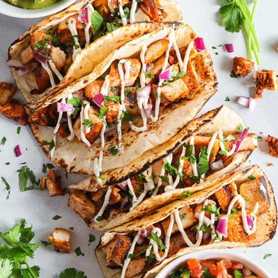

Week 7:
JavaScript Basics
JavaScript is used to add behavior and interactivity to your webpages.
Each object has four mouse interaction states that can be used to trigger code using an event listener: mouseover, mouseout, mousemove, and click. In order to add an event handler, we need to first select the appropriate object to add it to. This is done using querySelector().
Mouse Interaction
Each object has four mouse interaction states that can be used to trigger code using an event listener: mouseover, mouseout, mousemove, and click. In order to add an event handler, we need to first select the appropriate object to add it to. This is done using querySelector().
Click this to change the background color.
Click this to change the text color.
<script>
document.querySelector("#changebg").addEventListener("click", function(){
this.style.backgroundColor = 'green';
});
document.querySelector("#changecolor").addEventListener("click", function(){
this.style.color = 'red';
});
</script>
Move your mouse over this to change the text.
<script>
document.querySelector("#hover").addEventListener("mouseover", function(){
this.innerHTML = "Okay, now move it out to change it back.";
});
document.querySelector("#hover").addEventListener("mouseout", function(){
this.innerHTML = "Move your mouse over this to change the text.";
});
</script>
Move your mouse over this, and watch the number on the right increase.
0
<script>
var moves = 0;
document.querySelector("#mousemove").addEventListener("mousemove", function(){
moves++;
document.querySelector("#movecount").innerHTML = moves;
});
</script>
Swapping Images





Grilled Chicken Tacos with Pico de Gallo.
<script>
document.querySelector("#thumb1").addEventListener("mouseover", function(){
this.style.opacity = 1;
});
document.querySelector("#thumb1").addEventListener("mouseout", function(){
this.style.opacity = 0.5;
});
document.querySelector("#thumb1").addEventListener("click", function(){
document.querySelector("#mainimg").src = "tacos1.jpg";
document.querySelector("#imgcaption").innerHTML = "Pulled Pork Tacos with Cilantro and White Onions.";
});
document.querySelector("#thumb2").addEventListener("mouseover", function(){
this.style.opacity = 1;
});
document.querySelector("#thumb2").addEventListener("mouseout", function(){
this.style.opacity = 0.5;
});
document.querySelector("#thumb2").addEventListener("click", function(){
document.querySelector("#mainimg").src = "tacos2.jpg";
document.querySelector("#imgcaption").innerHTML = "Grilled Chicken Tacos with Pico de Gallo.";
});
document.querySelector("#thumb3").addEventListener("mouseover", function(){
this.style.opacity = 1;
});
document.querySelector("#thumb3").addEventListener("mouseout", function(){
this.style.opacity = 0.5;
});
document.querySelector("#thumb3").addEventListener("click", function(){
document.querySelector("#mainimg").src = "tacos3.jpg";
document.querySelector("#imgcaption").innerHTML = "Grilled Chicken Tacos with Fancy Crema and Red Onions.";
});
document.querySelector("#thumb4").addEventListener("mouseover", function(){
this.style.opacity = 1;
});
document.querySelector("#thumb4").addEventListener("mouseout", function(){
this.style.opacity = 0.5;
});
document.querySelector("#thumb4").addEventListener("click", function(){
document.querySelector("#mainimg").src = "tacos4.jpg";
document.querySelector("#imgcaption").innerHTML = "You can never have too many limes for your tacos.";
});
document.querySelector("#thumb5").addEventListener("mouseover", function(){
this.style.opacity = 1;
});
document.querySelector("#thumb5").addEventListener("mouseout", function(){
this.style.opacity = 0.5;
});
document.querySelector("#thumb5").addEventListener("click", function(){
document.querySelector("#mainimg").src = "tacos5.jpg";
document.querySelector("#imgcaption").innerHTML = "Carne Asada is by far my favorite taco.";
});
</script>